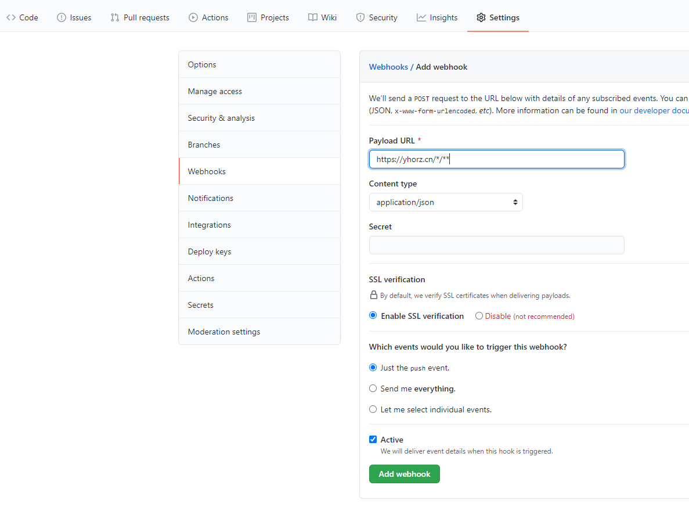

本文最后更新于：21 分钟前
之前用到hexo部署静态站点到github.io。由于其服务器在境外且域名被墙的原因，稳定性极差，无法正常访问。本文将详细描述使用Github的webhook完成自动部署网站到国内服务器。
github - webhook 配置
- 登录github站点，打开你的*.github.io仓库
- 点击setting - webhook - create - add
- 配置接口地址 https://yhorz.cn/*/**
- 当仓库中有代码更新时，会调用配置的接口地址

脚本编写
- api是在koa项目中编写
- 判断是否存在静态项目文件夹
- 若不存在文件夹，使用nodegit执行clone命令拉取仓库到指定目录
- 若存在文件夹，则执行pull进行更新
- 若是多次pull命令失败，则删除指定目录，重新clone（待完善）
tips: 将 * 替换一下即可// 更新csorz.github.io代码 router.get('/github/*/update', (ctx) => { let exists = true const filePath = path.resolve(__dirname, '../../static/*/') const gitUrl = 'http://github.com/*/*.github.io.git' try { // http://nodejs.cn/api/modules/dirname.html // http://nodejs.cn/api/fs.html#fs_fs_fstatsync_fd_options fs.statSync(filePath) } catch (err) { exists = false } if (exists) { // http://nodejs.cn/api/child_process.html#child_process_child_process_exec_command_options_callback childProcess.exec('git pull', { cwd: filePath }, (error, stdout, stderr) => { if (error) { console.error(`执行的错误: ${error}`) return } console.log(`stdout: ${stdout}`) console.error(`stderr: ${stderr}`) }) } else { childProcess.execSync(`git clone ${gitUrl} ${filePath}`, { stdio: [0, 1, 2] }) // Clone a given repository into the `filePath` folder. # Git.Clone(gitUrl, filePath).catch((err) => { # console.log('nodegit clone error: ', err) # }) } ctx.body = api.ok('', '更新*.github.io成功！') })
本博客所有文章除特别声明外，均采用 CC BY-SA 4.0 协议 ，转载请注明出处！